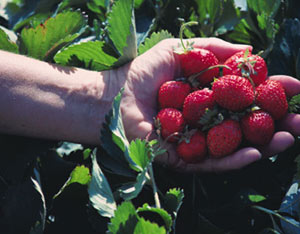

The quenching flavor and charming fragrance of strawberries have captivated taste buds for centuries. Unfortunately, America’s fourth favorite fruit comes with a price: pesticides used on conventional crops are a hazard both to our bodies and to our environment. Methyl bromide, used to disinfect soil before strawberries are planted, is 60 times more damaging to the ozone layer then chlorofluorocarbons, which are banned.
“Part of it degrades in the soil by bacteria, but a lot escapes into the atmosphere,” explains Husein Ajwa, soil scientist for the USDA’s Agricultural Research Service in Fresno, Calif. “Methyl bromide is so light, it moves up quickly to the stratosphere, to the ozone layer. This starts a reaction that converts ozone into oxygen molecules and releases radiation, as with other ozone-depleting compounds.” One bromine ion can destroy hundreds of thousands of ozone molecules before jettisoning into the troposphere.
“[Farmers] cover fields with plastic tarps and [the methyl bromide] permeates the soil in a day or two. Some studies show that half the gas escapes immediately,” says Larry Bohlen, Health and Environment Programs Director at Friends of the Earth in Washington, D.C. The amount that leaches out of the soil can reach as high as 95 percent.
Methyl bromide is also acutely toxic, Ajwa explains. Exposure to high concentrations can cause damage to the respiratory and central nervous systems, even death. The United States is responsible for about 40 percent of the 72,000 tons of methyl bromide used worldwide every year, with California alone producing 80 percent of the nation’s berries and 20 percent of the global market - 1.5 billion pounds yearly. Farmers credit methyl bromide along with the mild, coastal climate (their fields are four times more productive than any other state) for their $750 million crop.
Under the federal Clean Air Act, however, methyl bromide use in industrialized nations will end in 2005, and developing nations have until 2015 to comply. “It harmonized phaseout with the international agreement in order to keep American farmers competitive,” Bohlen says. Bill Thomas, director of the EPA’s Methyl Bromide Program in Washington, D.C., says that the agency is committed to enforcing the Clean Air Act and finding viable alternatives to methyl bromide, which has been ubiquitous in strawberry fields and nurseries since it came to market in the 1940s.
The stakes are high, however, and public servants hear growers’ concerns. In 1999, Vick Fazio, then a Democratic Representative for the Fresno area, wrote an amendment that extended the Clean Air Act deadline from 2001 to 2005. The current political climate has inspired attempts to doctor existing legislation by any means necessary. “There have been several challenges,” Bohlen affirms, citing a proposal by Sen. Richard Ponbom (R-California) to redefine the Unites States as a developing nation in order to get the 2015 deadline.
Growers’ devotion to methyl bromide is based on its effectiveness when paired with the fungicide chloropicrin, better known as tear gas.“The synergy between the two is a fantastic combination that effects a wide range of pathogens - wider than either could do alone,” Ajwa says. They hit soil-borne fungi, insects, weeds, nematodes and other pathogens that affect plant yield and quality. Disinfecting the soil also increases plant vigor and root development during the shock of transplanting. No other fumigant can match it in terms of yields or cost, “but methyl bromide is not really a silver bullet,” Aiwa points out. “The silver bullet was price.”
But the cost of methyl bromide is on the rise, forcing farmers to consider their options. “The cost has doubled in the last year,” Thomas says. “Those that can move into alternatives probably are.”
So growers and government are searching in earnest for viable alternatives. The most likely replacement in conventional production is a Dow Chemical product called Telone C-35, or InLine, which is applied weeks before planting using the drip tape that will later water strawberry beds.
While it may be the next best thing, this chemical cocktail of Chloropicrin and 1.3-dichloropropene harbors contamination concerns for water quality and worker safety.
The EPA classifies chloropicrin, which has been used as a soil fumigant since 1920, as a Class I toxin that can irritate the skin, eyes and respiratory system; induce vomiting; and cause death. Telone is registered, but under severe restrictions. In California, only a limited number of gallons per county is allowed.
Nonchemical options include rotating crops and applying plant extracts, organic amendments or fungi that target weeds. Sterilizing the soil with steam or solar heating can work. Mulching with corn gluten can keep the weeds down, while planting strawberries in compost plugs is a cheap and effective way to give plants the boost they need to overcome transplant shock. And breeding disease-resistant plants is, of course, ongoing.
Organic farming methods seem like the obvious alternative to chemical use, but even organic farmers depend on certified stock that is pathogen-free, courtesy of methyl bromide. “Organic growers use plants grown in fumigated soil,” Vick explains. “Especially without methyl bromide you need to start with disease-free plants that are super healthy in order to survive the stress of production.”
Oddly, methyl bromide passed the USDA’s organic standards qualification. “I think there’s an exemption,” Bohlen says, “because the rationale is that application happens before the plant goes into the ground.”
“Organic production would produce relatively lesser yields if you have soil-borne pathogens,” Ajwa affirms.
As it is, yields lag behind conventional production by 25 to 60 percent. Organic strawberries currently account for less than 0.1 percent of total acreage in California.
“You can grow organic, but most conventional growers don’t want to because you grow only once every five years,” Thomas says. Organic growers typically rotate strawberries with vegetables and a cover crop before cycling back into strawberries. “It works because organic growers can get a premium. But conventional growers can use methyl bromide and get a profit every year,” he adds.
Clearly, the era of chemical dependence on methyl bromide is ending. But growers are justifiably worried they’ll take a hit when it goes off the market. “It’s a very complicated picture, and it’s hard to predict how things will turn out,” Vick observes.
What can a strawberry lover do? Buy local and organic produce to keep methyl bromide out of the air and toxins out of your body - strawberries absorb more pesticide residue than any other fruit.
“Truth is, strawberries used to be better when grown in season and locally,” laments Kert Davies, who directs Greenpeace’s U.S. Global Warming Campaign from Washington D.C. Luckily, those strawberries are out there, somewhere. Seek out local farms, farmers markets and gardens, pluck the best berries, and bear the fruitful rewards.
|
 PHOTO: FILE PHOTO While this article will likely inspire you to grow and eat organic rather than conventionally grown strawberries, it points out that even organic farmers rely on methyl bromide for their pathogen-free stock. |
|
|